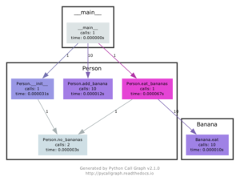
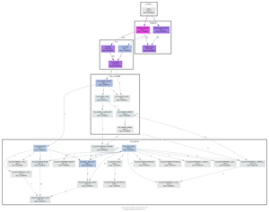
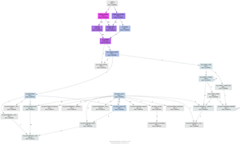

Python Call Graph¶
Welcome! Python Call Graph is a Python module that creates call graph visualizations for Python applications.

Screenshots¶
Click on the images below to see a larger version and the source code that generated them.
  Project Status¶
The latest version is 1.0.1 which was released on 2013-09-17, and is a backwards incompatbile from the previous release.
The project lives on GitHub, where you can report issues, contribute to the project by forking the project then creating a pull request, or just browse the source code.
The documentation needs some work stiil. Feel free to contribute :)
Features¶
Support for Python 2.7+ and Python 3.3+.
Static visualizations of the call graph using various tools such as Graphviz and Gephi.
Execute pycallgraph from the command line or import it in your code.
Customisable colors. You can programatically set the colors based on number of calls, time taken, memory usage, etc.
Modules can be visually grouped together.
Easily extendable to create your own output formats.
Quick Start¶
Installation is easy as:
pip install pycallgraph
You can either use the command-line interface for a quick visualization of your Python script, or the pycallgraph module for more fine-grained settings.
The following examples specify graphviz as the outputter, so it’s required to be installed. They will generate a file called pycallgraph.png.
The command-line method of running pycallgraph is:
$ pycallgraph graphviz -- ./mypythonscript.py
A simple use of the API is:
from pycallgraph import PyCallGraph
from pycallgraph.output import GraphvizOutput
with PyCallGraph(output=GraphvizOutput()):
code_to_profile()